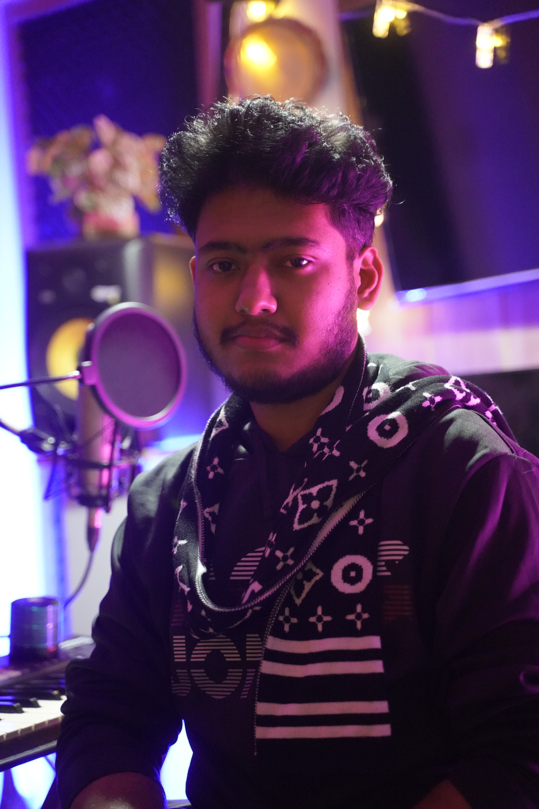

Biography
Based in Niketon, Dhaka, I have spent the last 13+ years defining the soundscape of the Bangladeshi media industry. My work spans from heart-touching OSTs for Bangla Drama to high-fidelity mixing for cinematic fictions.
Whether scoring the background music (BGM) for a tense dramatic scene or mixing and mastering a track for global platforms, I approach every frequency with artistic intuition and technical precision.
Started journey into the world of audio production and sound engineering.
"First steps into understanding frequencies, synthesis, and the emotional impact of a single note."
Began composing major OSTs and BGMs for top-tier Bangladeshi dramas and media.

Establishing the JKH sound signature across national television.
Expanding into film scoring, complex mixing & mastering for digital platforms (Spotify, Apple Music).
"Over 50+ major projects, 1 Million+ streams, and a relentless pursuit of perfection."

© 2026 JKH JESAN
DESIGNED IN DHAKA